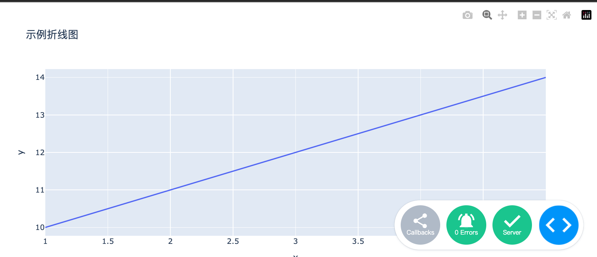
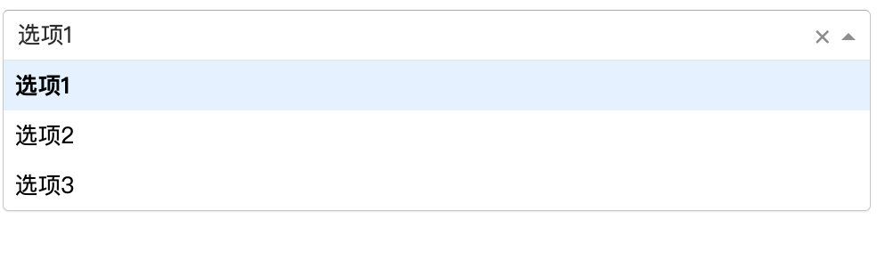

Dash Common Interactive Components
Dash is based on Python and allows developers to build interactive web applications using pure Python code.
One of Dash's core components isdash.dcc(Dash Core Components), which provides rich UI components such as sliders, dropdown menus, graphs, etc. These components can help developers quickly build powerful web applications.
dash.dccComponents include but are not limited to:
- Graph: Used to plot various charts, such as line charts, bar charts, scatter plots, etc.
- Dropdown: Dropdown menu that allows users to select one from multiple options.
- Slider: Slider that allows users to select a numerical range by dragging.
- Input: Input box that allows users to enter text or numbers.
- Textarea: Multi-line text input box, suitable for entering longer text content.
- Checklist: Checkbox list that allows users to select multiple options.
- RadioItems: Radio button list that allows users to select one from multiple options.
- DatePickerSingleandDatePickerRange: Date picker that allows users to select a single date or a date range.
- Upload: File upload component that allows users to upload files.
These components are the foundation for building interactive web applications. Developers can create complex user interfaces by combining these components.
In the latest version of Dash, it is recommended to import dcc in the following way:
from dash import dcc
Common interactive components → Common interactive components
| Components | Description | Example code |
|---|---|---|
dcc.Input |
Create a text input box. | dcc.Input(id='input', type='text', placeholder='请输入内容...') |
dcc.Dropdown |
Create a dropdown menu. | dcc.Dropdown(id='dropdown', options=[{'label': '选项1', 'value': '1'}], value='1') |
dcc.Slider |
Create a slider. | dcc.Slider(id='slider', min=0, max=10, step=1, value=5) |
dcc.Graph |
Create an interactive chart (based on Plotly.js). | dcc.Graph(id='graph', figure={'data': [{'x': [1, 2, 3], 'y': [4, 1, 2], 'type': 'bar'}]}) |
dcc.Textarea |
Create a multi-line text input box. | dcc.Textarea(id='textarea', value='请输入多行文本...') |
dcc.Checklist |
Create a checkbox list. | dcc.Checklist(id='checklist', options=[{'label': '选项1', 'value': '1'}], value=['1']) |
dcc.RadioItems |
Create a radio button group. | dcc.RadioItems(id='radio', options=[{'label': '选项1', 'value': '1'}], value='1') |
dcc.DatePickerSingle |
Create a date picker (single). | dcc.DatePickerSingle(id='date-picker', date='2023-10-01') |
dcc.DatePickerRange |
Create a date range picker. | dcc.DatePickerRange(id='date-range', start_date='2023-10-01', end_date='2023-10-07') |
dcc.Markdown |
Render Markdown text. | dcc.Markdown('''# 标题\n- 列表项1''') |
dcc.Store |
Store data on the client side for sharing data across callbacks. | dcc.Store(id='store', data={'key': 'value'}) |
dcc.Upload |
Create a file upload component. | dcc.Upload(id='upload', children=html.Div('拖放或点击上传文件')) |
dcc.Tabs |
Create a tab component. | dcc.Tabs(id='tabs', children=[dcc.Tab(label='标签1', value='1')]) |
dcc.Tab |
Create a single tab (needs to be used withdcc.TabsUse together with). |
dcc.Tab(label='标签1', value='1') |
dcc.Interval |
A component that triggers callbacks periodically. | dcc.Interval(id='interval', interval=1000) |
dcc.Location |
A component for managing the URL. | dcc.Location(id='url', pathname='/') |
dcc.Link |
Create a hyperlink for page navigation (needs to be used withdcc.LocationUse together with). |
dcc.Link('跳转到首页', href='/index.html') |
dcc.ConfirmDialog |
Create a confirmation dialog. | dcc.ConfirmDialog(id='confirm', message='确定要执行此操作吗？') |
dcc.ConfirmDialogProvider |
Provide a confirmation dialog (needs to be used in conjunction with components such as buttons). | dcc.ConfirmDialogProvider(html.Button('删除'), id='confirm-provider') |
dcc.Loading |
Create a loading animation component. | dcc.Loading(id='loading', children=[html.Div('加载中...')]) |
dcc.Download |
A component used to trigger file downloads. | dcc.Download(id='download') |
Application example
Create a simple Dash application
The following is a simple Dash application example that demonstrates how to usedash.dccComponent:
Example
from dash import dcc, html
from dash.dependencies import Input, Output
# Create a Dash application
app = dash.Dash(__name__)
# Define the application layout
app.layout = html.Div([
dcc.Input(id='input-text', type='text', value=''),
html.Div(id='output-text')
])
# Define the callback function
@app.callback(
Output('output-text', 'children'),
[Input('input-text', 'value')]
)
def update_output(value):
return f'The content you entered is: {value}'
# Run the app
if __name__ == '__main__':
app.run_server(debug=True)
In the above example, we created a simple Dash application containing an input box and an area that displays the input content.
When the user enters content in the input box, the application updates the content of the display area in real time.

Usagedcc.GraphDraw chart
dcc.GraphYesdash.dccone of the most commonly used components, used for plotting various charts.
The following areaUsage → The following is an example of usingdcc.GraphExample of drawing a line chart:
Example
from dash import dcc, html
import plotly.express as px
import pandas as pd
# Create a Dash application
app = dash.Dash(__name__)
# Create sample data
df = pd.DataFrame({
'x': [1, 2, 3, 4, 5],
'y': [10, 11, 12, 13, 14]
})
# Create a Line Chart with Plotly Express
fig = px.line(df, x='x', y='y', title='Example line chart')
# Define the application layout
app.layout = html.Div([
dcc.Graph(figure=fig)
])
# Run the app
if __name__ == '__main__':
app.run_server(debug=True)
In the above example, we useplotly.expressCreated a simple line chart and passed it throughdcc.GraphThe component displays it in the application.

Usagedcc.DropdownCreate a dropdown menu → Create a dropdown menu
dcc.Dropdowncomponent allows users to select one from multiple options.
The following areaUsage → The following is an example of usingdcc.Dropdownexample:
Example
from dash import dcc, html
from dash.dependencies import Input, Output
# Create a Dash application
app = dash.Dash(__name__)
# Define the application layout
app.layout = html.Div([
dcc.Dropdown(
id='dropdown',
options=[
{'label': 'Option 1', 'value': '1'},
{'label': 'Option 2', 'value': '2'},
{'label': 'Option 3', 'value': '3'}
],
value='1' # Default selected value
),
html.Div(id='dropdown-output')
])
# Define the callback function
@app.callback(
Output('dropdown-output', 'children'),
[Input('dropdown', 'value')]
)
def update_output(value):
return f'You selected: {value}'
# Run the app
if __name__ == '__main__':
app.run_server(debug=True)
In the above example, we created a dropdown menu. When the user selects an option, the application displays the content selected by the user.

dash.dccCommon properties and callbacks of components
dash.dccThe component's properties are very rich, and each component has its specific properties.
The following are properties of some common components:
dcc.Input：id: The unique identifier of the component.type: input types, such as → : input types, such astext、numberetc.value: The current value of the input box.
dcc.Dropdown：id: The unique identifier of the component.options: The option list of the dropdown menu, each option is a dictionary containinglabelandvalue。value: The currently selected value.
dcc.Graph：id: The unique identifier of the component.figure: The chart object to display, usually created byplotly.expressorplotly.graph_objectsCreate.
dcc.Slider：id: The unique identifier of the component.min: The minimum value of the slider.max: The maximum value of the slider.value: The current value of the slider.
callback function
In Dash, callback functions are used to handle user interactions. Callback functions are defined via@app.callbackthe decorator and specify input and output components.
The following is a simple callback function example:
Example
Output('output-component', 'children'),
[Input('input-component', 'value')]
)
def update_output(value):
return f'The content you entered is: {value}'
withTopin the example，callback function → In the above example, the callback functionupdate_outputwill beinput-componentis called when the value changes, and the new value is passed tooutput-component。
Practical application examples
dash.dccComponents have a wide range of applications in real projects. The following is a real-world application case that shows how to usedash.dcccomponent to build an interactive data visualization application.
Interactive data visualization application
Suppose we have a data set containing temperature and humidity data for different cities. We can usedash.dcccomponent to build an interactive application that allows users to select a city and view the corresponding temperature and humidity charts.
Example
from dash import dcc, html
from dash.dependencies import Input, Output
import plotly.express as px
import pandas as pd
# Create a Dash application
app = dash.Dash(__name__)
# Create sample data
df = pd.DataFrame({
'city': ['Beijing', 'Shanghai', 'Guangzhou', 'Shenzhen'],
'Temperature': [20, 25, 30, 28],
'Humidity': [50, 60, 70, 65]
})
# Define the application layout
app.layout = html.Div([
dcc.Dropdown(
id='city-dropdown',
options=[{'label': city, 'value': city} for city in df['city']],
value='Beijing' # Default selected city
),
dcc.Graph(id='temperature-graph'),
dcc.Graph(id='humidity-graph')
])
# Define the callback function
@app.callback(
[Output('temperature-graph', 'figure'),
Output('humidity-graph', 'figure')],
[Input('city-dropdown', 'value')]
)
def update_graphs(selected_city):
filtered_df = df[df['city'] == selected_city]
temperature_fig = px.bar(filtered_df, x='city', y='Temperature', title='Temperature')
humidity_fig = px.bar(filtered_df, x='city', y='Humidity', title='Humidity')
return temperature_fig, humidity_fig
# Run the app
if __name__ == '__main__':
app.run_server(debug=True)
In the above example, the user can select a city through the dropdown menu, and the application will update the bar chart of temperature and humidity based on the user's selection.